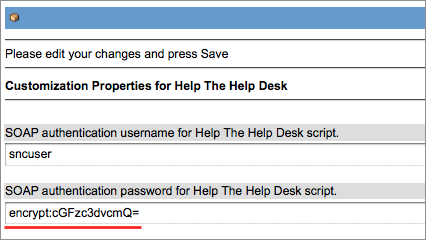
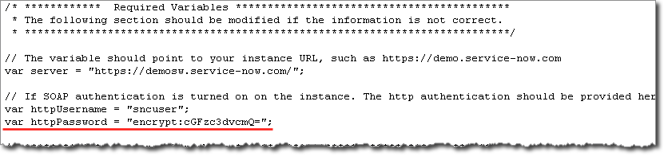
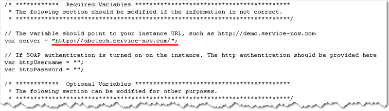

Help the Help Desk Login Script
| |
Note: This article applies to Fuji and earlier releases. For more current information, see Configuration Management at http://docs.servicenow.com
The ServiceNow Wiki is no longer being updated. Visit http://docs.servicenow.com for the latest product documentation. |
Contents
1 Overview
The Help the Help Desk script enables organizations to proactively scan their network to discover all Windows based hardware and the software packages installed on those devices. This WMI based script is included in the core ServiceNow functionality. This script also can be set up to run as a Windows login script and used to keep the CMDB up to date. The script is named helpthehelpdesk.js and can be downloaded from each customer's local instance.
2 How Help the Help Desk Identifies Devices
Help the Help Desk uses a predefined series of queries to identify and update existing CIs in the CMDB or to create a new CI if no match is found. These queries attempt to match devices using the three criteria listed here, in this order. Updates to an existing CI require only a single match as the list is evaluated. For example, if a device's name has changed, but the MAC address is the same, the CI with the matching MAC address is updated.
- Serial number in the cmdb_ci_computer table
- MAC address in the cmdb_ci_network_adapter table
- Computer name in the cmdb_ci_computer table
| |
Note: Discovery Identifiers are incompatible with Help the Help Desk queries. |
2.1 Script Include
The Script Include CIIdentifierForHelpDesk provides the logic for updating existing CIs or creating a new CI if no matching device exists in the CMDB. Do not modify this script. Errors introduced into this script can result in update failures or in new CIs being created for every device found.
3 Password Encoding
Use the Help the Help Desk properties to encode the password with simple base64 encoding. Configure the user name and encode the password in the properties before downloading the script. This adds the encoded password directly to the script without any further configuration.
- Navigate to System Definition > Help the Help Desk.
- Enter a user name and password into the properties for SOAP authentication . . . .
- Click Save.
- The password is encoded immediately.
- 
- Navigate to System Definition > Help the Help Desk Login Script.
- Download the script.
- The script downloads with the encoded password in place.
- 
- If you download the script before encoding the password in the properties form, you must add the variable and encoded password manually.
{kind=link}
{kind=link}
4 Installing and Using the Login Script
The login script is installed on the customer's instance and can be downloaded directly from a module. The same script is used to perform the Help the Help Desk scan, which gathers information about a user's Windows computer and updates the CMDB.
- Log in to your ServiceNow instance with Windows Internet Explorer.
- Navigate to System Definition > Help the Help Desk Login Script.
- Follow the download instructions in the page that appears.
- Put the helpthehelpdesk.js file in the following folder:
- %SystemRoot%\sysvol\sysvol\<domain DNS name>\scripts
- where %SystemRoot% is usually c:\winnt or c:\WINDOWS and <domain DNS name> is the DNS name of the domain, similar to MyDomain.com. This folder is replicated to all Domain Controllers in the domain.
- Open the helpthehelpdesk.js file in a text editor such as Wordpad.
- Check the var server line to ensure that the URL for your ServiceNow instance is correct. The name of the instance is added automatically. It should look something like this:
- var server = "https://abctech.service-now.com/";
- 
- Ensure that basic authorization for SOAP requests is enabled in your ServiceNow instance, and a SOAP user is defined.
- This allows the script to connect to your instance. The entry should look something like this:
- var httpUsername = "user_on_your_instance";
- var httpPassword = "user's_password";
- Create a Logon.bat script to run helpthehelpdesk.js as follows:
- @echo off
- cscript %0\..\helpthehelpdesk.js
- EXIT
- Add Logon.bat to the field labeled Logon script on the Profile tab of the user properties dialog in the Active Directory Users and Computers MMC corresponds to the scriptPath attribute of the user object. Logon scripts can also be configured in Group Policy. However, Group Policy only applies to clients with Windows 2000 or above. The setting in Group Policy is User Configuration, Windows Settings, Scripts (Logon/Logoff), Logon. Best practice is to copy the file you want for the Logon script to the Windows clipboard, open the Logon setting in the Group Policy editor, press the Show Files... button, and paste the desired file in the dialog. You can select the file and edit it in this dialog as well. This is easier than navigating in Windows Explorer to the folder where Group Policy Logon scripts are saved. However, if you do have to navigate to the folder, the path on the Domain Controller is:
- %SystemRoot%\sysvol\sysvol\<domain DNS name>\<policy GUID>\user\scripts\logon
{kind=link}
- Again, %SystemRoot% is usually c:\winnt and <domain DNS name> is the DNS name of the domain, similar to MyDomain.com. <policy GUID> is a hexadecimal string representing the GUID (unique identifier) of the specific Group Policy Object (GPO). Group Policies are assigned to a domain, site, or organizational unit in Active Directory. The Logon script setting applies to all users in the domain, site, or organizational unit to which the GPO applies. You will notice that you assign a Logon script to all users in the container at once, rather than having to assign the scriptPath attribute for each user. This makes it much easier to assign Logon scripts to many users. However, since the same Group Policy applies to all users in the domain, site, or organizational unit, you must code the Logon script to accommodate all users.